ENVIRONMENT CHAMBER
RANGE CHECK vs NASA DATA
What NASA saw when airflow was reduced
In Saffire-V, NASA cut the flow to 5 cm/s for 300 seconds, which helped a plastic (PMMA) sample go out quickly. With the fan off for about 70 seconds, a cotton-fabric flame came back and burned for roughly another 150 seconds.
HOW THIS RESULT WAS REACHED
For each setting: where the value comes from and the exact NASA source. NASA= taken from NASA data or text. model= my assumption, no NASA source. you= set by you.
NASA REFERENCE DATA
Measured by NASA. Press a button to load that experiment’s conditions into the chamber. “PSI-xx” entries come from the NASA PSI tables.
OFFICIAL NASA FLIGHT IMAGERY & EXPERIMENT VIDEO
Ground-truth photographic and spectroscopic records from NASA Glenn Research Center, ISS Combustion Integrated Rack (CIR), Space Shuttle Columbia, and Cygnus Saffire missions.

NASA GRC: 1-G vs. Microgravity Candle Flame
Direct side-by-side comparison recorded by NASA Glenn. Left: classic 1-G teardrop flame with yellow incandescent soot tip. Right: pure microgravity spherical blue chemiluminescence flame without buoyant convection.
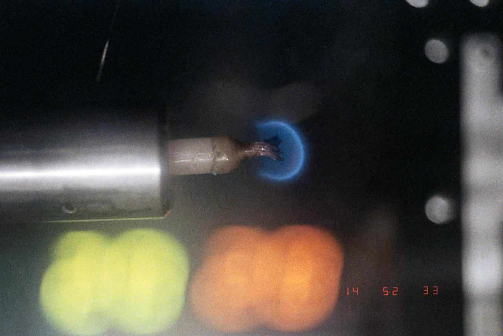
STS-50: Candle Flame in Microgravity
Historic photograph of a candle flame burning in freefall aboard Space Shuttle Columbia during the USML-1 Spacelab mission. The flame burns as a dim, soot-free blue sphere fed solely by diffusion.
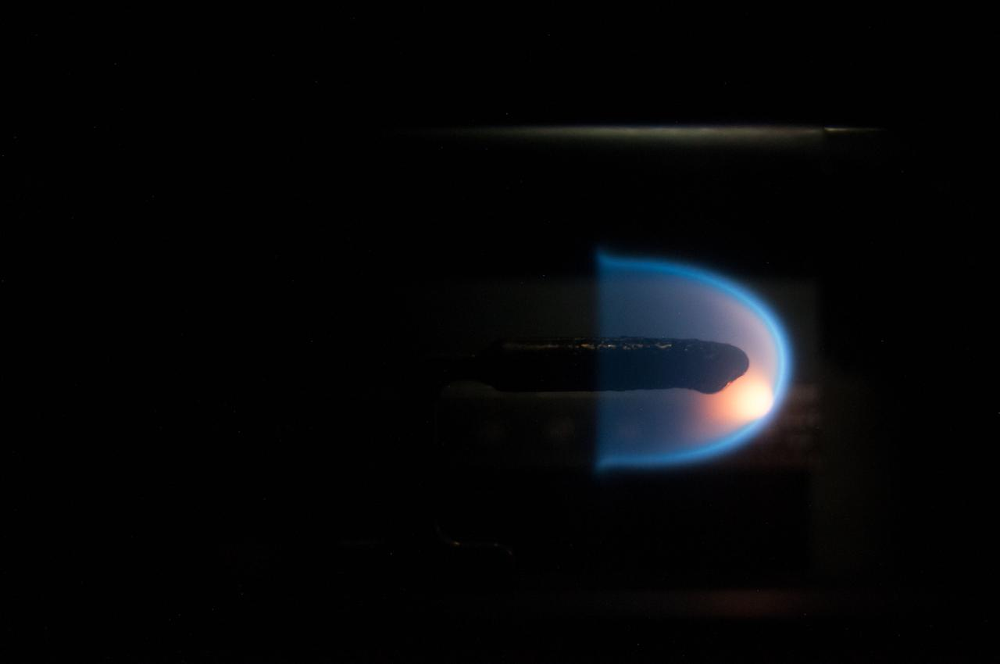
BASS-II: ISS Microgravity Glovebox Flame
Expedition 40 flight experiment investigating solid fuel extinction and low-speed forced convection inside the Microgravity Science Glovebox (MSG). Note the rounded wake envelope in forced draft.
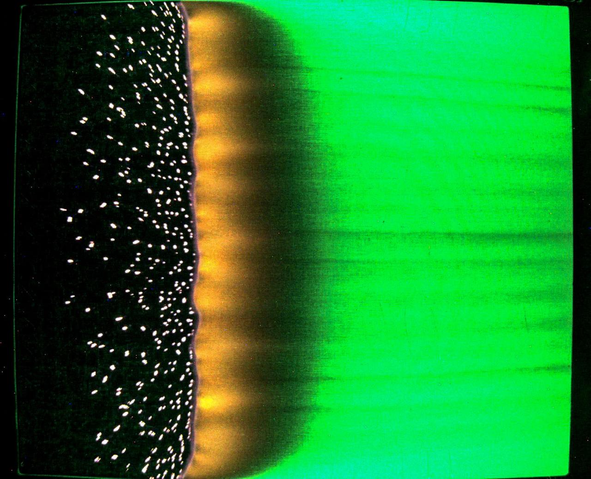
Saffire-IV: Cotton-Fiberglass Fabric Burn
Large-scale flame spread across SIBAL fabric (75% cotton / 25% fiberglass) inside an uncrewed Cygnus resupply vehicle duct at elevated oxygen under reduced pressure exploration atmospheres.
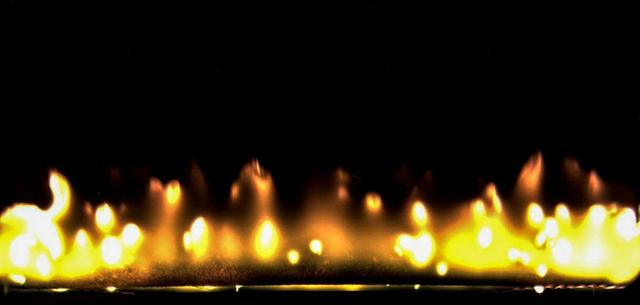
Saffire-V: PMMA Polymer Ignition & Flow Cut
Solid thermoplastic PMMA ignition in microgravity. When airflow velocity was decreased to 5 cm/s, the flame rapidly cooled due to radiative loss and reached total extinction.
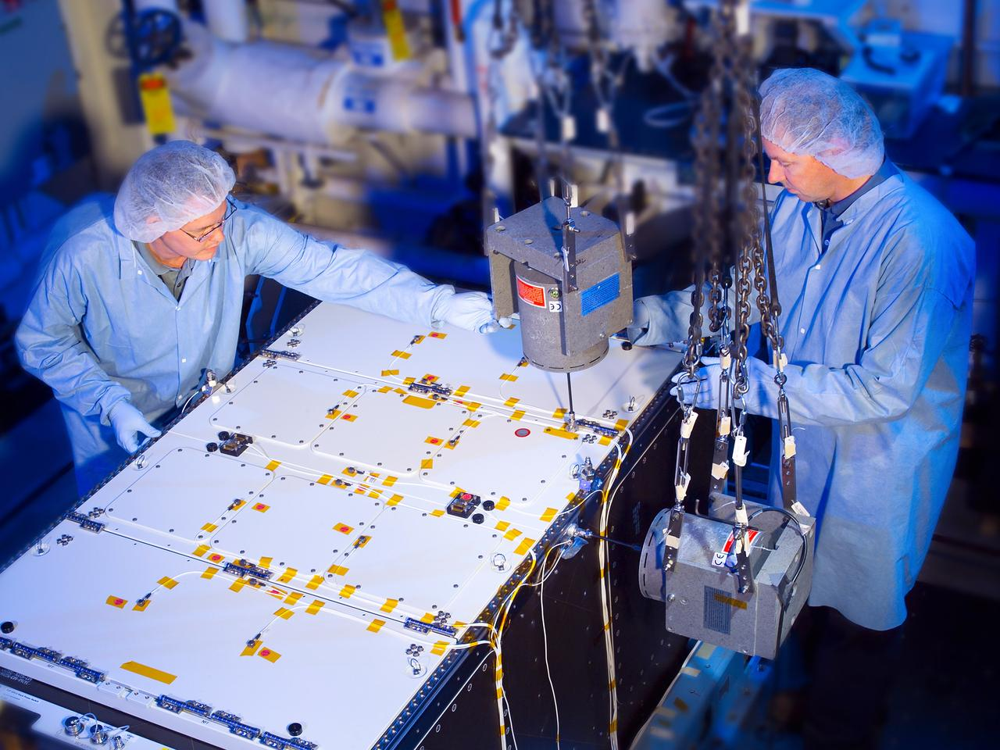
ISS Combustion Integrated Rack (CIR)
The 100-liter sealed combustion chamber inside Destiny Laboratory on the ISS. Features 1 mm/s to 50 cm/s flow delivery, optical diagnostics, and chemiluminescent spectrometers.
Official NASA Microgravity Combustion Video Archives
6 Official Flight RecordsGround-truth video archives from NASA Glenn, Johnson, and Marshall Space Flight Centers documenting droplet combustion, spherical diffusion flames, and cool flame phenomena aboard the ISS.
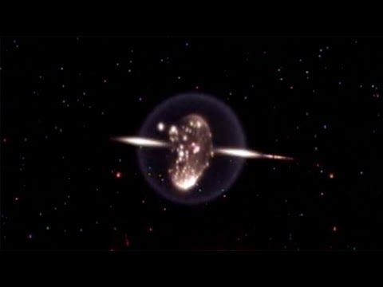
NASA HD · 3:45NASA ScienceCasts: The Power of Studying Combustion on ISS
Overview of microgravity combustion physics, removing buoyant convection, and the ACME chamber inside the Destiny Laboratory.
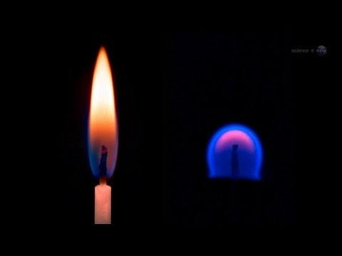
NASA HD · t=5sNASA ScienceCasts: Strange Flames on the Space Station
Discovery of soot-free spherical cool flames burning at low temperatures without visible soot radiation aboard the ISS.
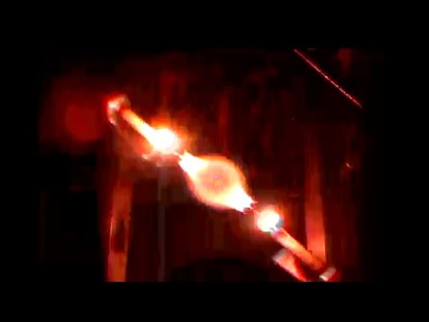
FLEX-2 · 1:20NASA ISS: Flame Comes to Life in Microgravity Combustion
High-resolution optical footage of spherical droplet ignition, symmetrical fuel vapor diffusion, and blue chemiluminescence.
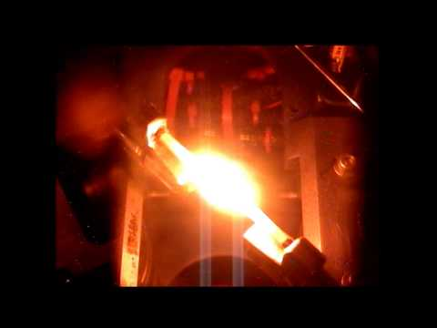
FLEX-2 · t=152sSpace Station Live: Studying Fire In Space (FLEX-2)
Microgravity Science Glovebox and CIR droplet combustion runs, evaluating radiative extinction limits and fuel efficiencies.
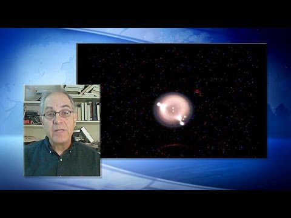
NASA Live · 5:10Space Station Live: Science of Space Combustion
Cornell and NASA investigators discuss burning isolated liquid fuel droplets in freefall to uncover clean combustion physics.
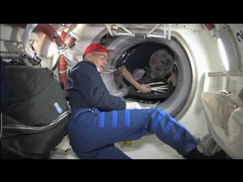
NASA Live · 4:40Space Station Live: FLEX in Space for Safer Combustion
How ISS microgravity flame research guides spacecraft fire safety standards and terrestrial low-emission combustor design.